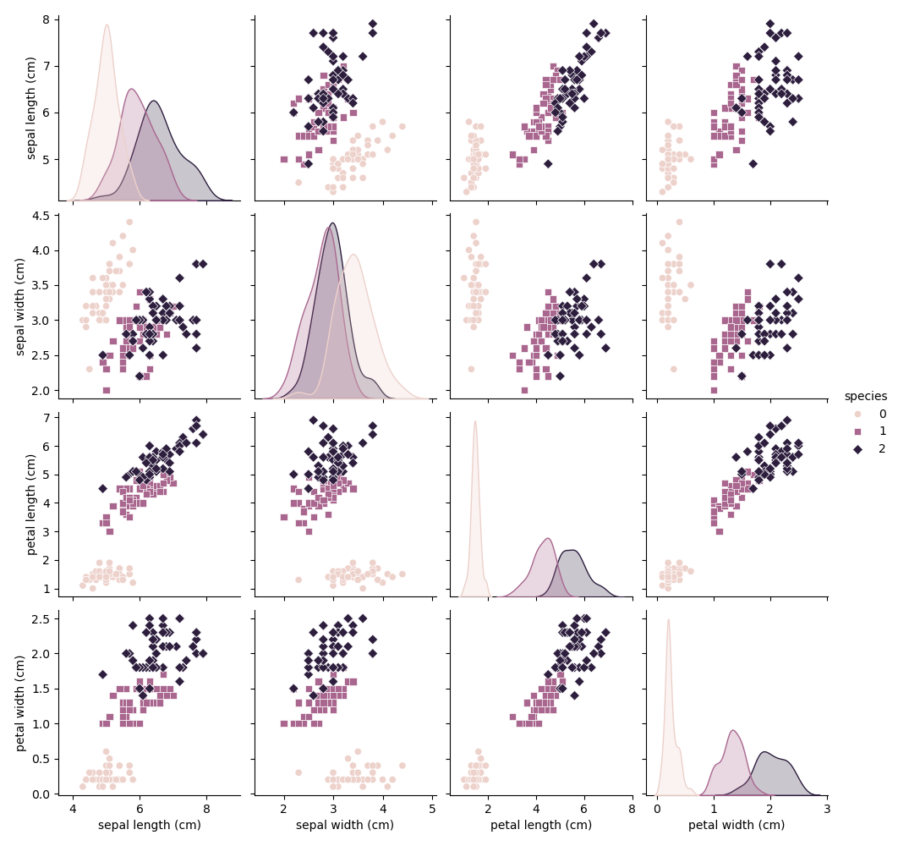

Iris数据集分析报告
基本信息
数据类型
| 列名 |
数据类型 |
| sepal length (cm) |
float64 |
| sepal width (cm) |
float64 |
| petal length (cm) |
float64 |
| petal width (cm) |
float64 |
| species |
int64 |
缺失值统计
| 列名 |
缺失值数量 |
| sepal length (cm) |
0 |
| sepal width (cm) |
0 |
| petal length (cm) |
0 |
| petal width (cm) |
0 |
| species |
0 |
描述性统计
| 特征 |
最小值 |
最大值 |
均值 |
标准差 |
| sepal length (cm) |
4.3 |
7.9 |
5.843333333333334 |
0.8280661279778629 |
| sepal width (cm) |
2.0 |
4.4 |
3.0573333333333337 |
0.435866284936698 |
| petal length (cm) |
1.0 |
6.9 |
3.7580000000000005 |
1.7652982332594667 |
| petal width (cm) |
0.1 |
2.5 |
1.1993333333333336 |
0.7622376689603465 |
| species |
0.0 |
2.0 |
1.0 |
0.8192319205190405 |
特征分布图
